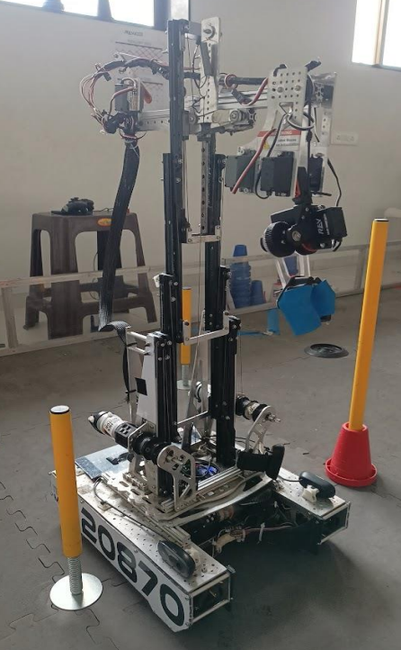
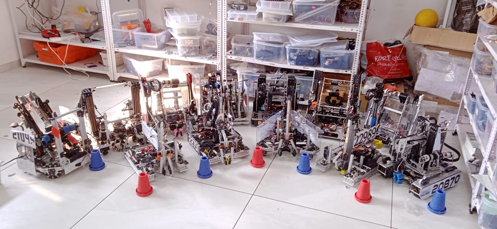
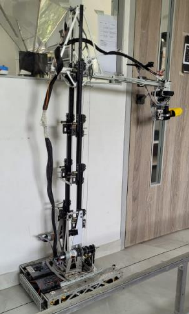

From prototype to finalist, Matrix 20870 embodies the spirit of iteration, innovation, and teamwork, securing a place in the Finals of the Asia Pacific Open Championship 2023.
About FTC Powerplay
FTC Powerplay is an annual robotics competition organized by FIRST Tech Challenge (FTC), where teams build robots to perform tasks on a dynamic field. In 2023, teams competed to collect and stack cones on poles of varying heights spread across the field. The match includes autonomous and driver-controlled periods, challenging participants to design robots that are fast, reliable, and precise under time constraints.
Matrix V1: The Initial Prototype
Matrix V1 served as the foundation for the team’s journey. This version featured key mechanical and software elements that were refined for later iterations.
Turret System: Equipped with external encoders for precise rotational control.
Dual Stage Lift Mechanism: Allowed stacking cones at different pole heights.

Matrix V1 Prototype in extended mode.
Matrix V2: A Redesigned Powerhouse
Matrix V2 was the result of rigorous testing and refinement, leading to significant improvements across hardware, software, and electronics.
Key Hardware Upgrades
Constant Force Springs: Assisted the lift mechanism, enhancing motor efficiency.
Pole Aligner with Beam Sensors: Improved accuracy during cone stacking.
Lower Gear Ratios: Increased speed for faster traversal across the field.
Software Architecture
Localization with Rotation Matrices: Tracked the robot's position using odometry data.
Finite State Machines: Managed the robot’s behavior during autonomous and teleop periods.
Trajectory Generation: Implemented custom splines for smooth movement.
Modular Software: Modularity in software allowed other robots to be tested rapidly. These robots can be seen in the figure below.

Robots tested on a similar codebase, established for 20870.

Matrix V2: Engineered for precision and speed.
Gallery: Matrix 20870 in Action
Autonomous Period - High Pole
Autonomous Period - Mid Pole
20871 vs 20870 Autonomous on Common High Junction
Asia Pacific Open Championship Match 28
Asia Pacific Open Championship Finals Match 2
Performance at the Asia Pacific Open Championship
Matrix 20870’s refined design and software propelled it to the Finals at the Asia Pacific Open Championship, achieving minimal autonomous failures. Despite falling short to its sister team, Eureka 20871, Matrix 20870 earned its place in the Finalist Alliance, marking an exceptional achievement in the season.